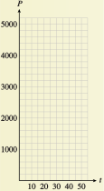
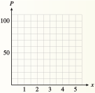

Subsection 2.4 Exponential Decay
In the preceding examples, exponential growth was modeled by increasing functions of the form
where \(b \gt 1\text{.}\) The function \(P(t) = P_0b^t\) is a decreasing function if \(0 \lt b \lt 1\text{.}\) In this case, we say that the function describes exponential decay, and the constant \(b\) is called the decay factor. In Investigation 2.4.1, we consider two examples of exponential decay.
Investigation 2.4.1. Exponential Decay.
-
A small coal-mining town has been losing population since 1940, when 5000 people lived there. At each census thereafter (taken at 10-year intervals), the population declined to approximately 0.90 of its earlier figure.
\(t\) \(P(t)\) \(0\) \(5000\) \(P(0)=5000\) \(10\) \(\) \(P(10)=5000\cdot 0.90=\) \(20\) \(\) \(P(20)=[5000\cdot 0.90]\cdot 0.90=\) \(30\) \(\) \(P(3)=\) \(40\) \(\) \(P(4)=\) \(50\) \(\) \(P(5)=\) Fill in the table showing the population \(P(t)\) of the town \(t\) years after 1940.
Plot the data points and connect them with a smooth curve.
Write a function that gives the population of the town at any time \(t\) in years after 1940. Hint
Express the values you calculated in part (1) using powers of \(0.90\text{.}\) Do you see a connection between the value of \(t\) and the exponent on \(0.90\text{?}\)
Graph your function from part (3) using a calculator. (Use the table to choose an appropriate domain and range.) The graph should resemble your hand-drawn graph from part (2).
Evaluate your function to find the population of the town in 1995. What was the population in 2000?
 -
A plastic window coating \(1\) millimeter thick decreases the light coming through a window by \(25\)%. This means that \(75\)% of the original amount of light comes through \(1\) millimeter of the coating. Each additional millimeter of coating reduces the light by another \(25\)%.
Fill in the table showing the percent of the light, \(P(x)\text{,}\) that shines through \(x\) millimeters of the window coating.
-
Plot the data points and connect them with a smooth curve.
\(x\) \(P(x)\) \(0\) \(100\) \(P(0)=100\) \(1\) \(\) \(P(1)=100\cdot 0.75=\) \(2\) \(\) \(P(2)=[100\cdot 0.75]\cdot 0.75=\) \(3\) \(\) \(P(3)=\) \(4\) \(\) \(P(4)=\) \(5\) \(\) \(P(5)=\)  Write a function that gives the percent of the light that shines through \(x\) millimeters of the coating. Hint
Express the values you calculated in part (1) using powers of \(0.75\text{.}\) Do you see a connection between the value of \(x\) and the exponent on \(0.75\text{?}\)
Graph your function from part (3) using a calculator. (Use your table of values to choose an appropriate domain and range.) The graph should resemble your hand-drawn graph from part (2).
- Evaluate your function to find the percent of the light that comes through 6 millimeters of plastic coating. What percent comes through \(\dfrac{1}{2}\) millimeter?